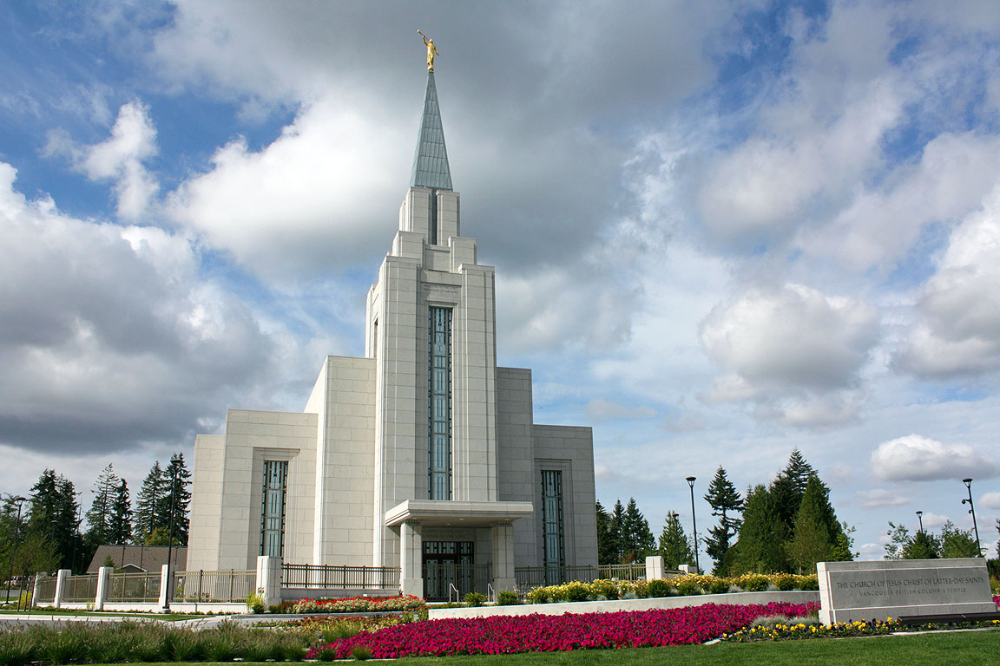
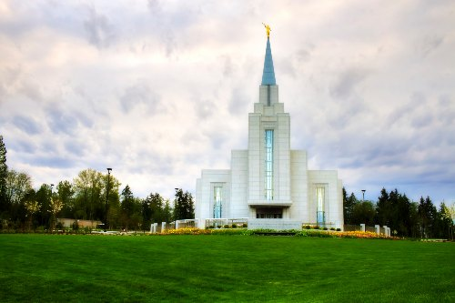
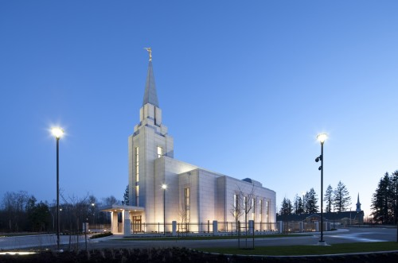

Plan your next trip with ease!
Temple Interior & Exterior
- Entrance into the Temple.
- Recommend Desk: Where we can get recommends.
- Endowment Room: My Life Has A Purpose.
- Celestial Room: A Glimpse Into Heaven.
- Sealing Room: Families Can be Forever.
- Baptistry: Blessings for our Ancestors.
- Temple Grounds: Gardens.
- Temple Distribution Center.
Specialized Services
- A family search center that supports family search and ordinance work.
- A playroom and low-cost, short-term babysitting services for the children of patrons.
- Long-term stay accommodations in kitchenette suites for full-time temple missionaries.
- Free access to changing rooms and bathroom facilities for temple patrons who have traveled far and need to change to and from church clothes.
Temple Facts
- The Vancouver British Columbia Temple was the seventh temple built in Canada and the first built in British Columbia.
- Prior to the dedication of the Vancouver British Columbia Temple, British Columbian Saints crossed the U.S.-Canada border to attend the Seattle Washington Temple.

Canada Vancouver: The temple view

Canada Vancouver temple is a great site to see.

Canada Vancouver: The dedication of the temple was May 2nd in 2010.